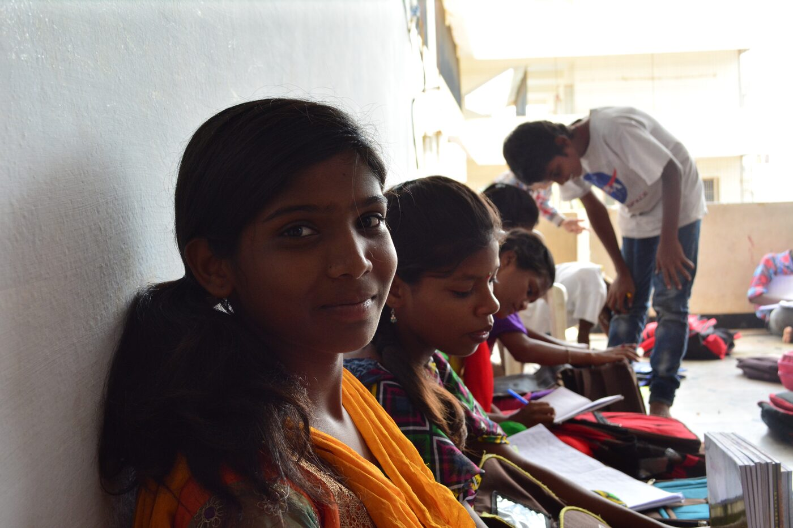

Sivajyothi’s journey of crafting dreams into reality
Sivajyothi came to Aarti Home at the age of 6, where she found a nurturing environment to grow and learn. Through education and vocational training at Aarti Community College, she gained the skills and confidence to pursue her dreams. Today she is a Commis II chef at a leading hotel in Bengaluru, turning her hard work into a remarkable career.